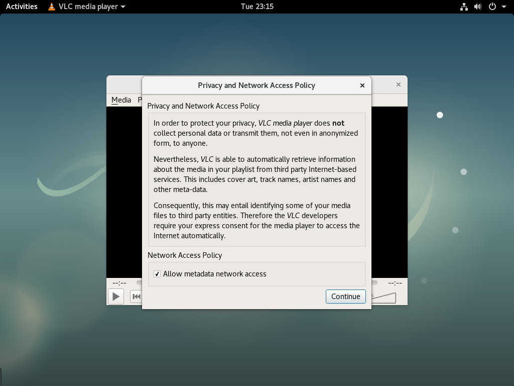
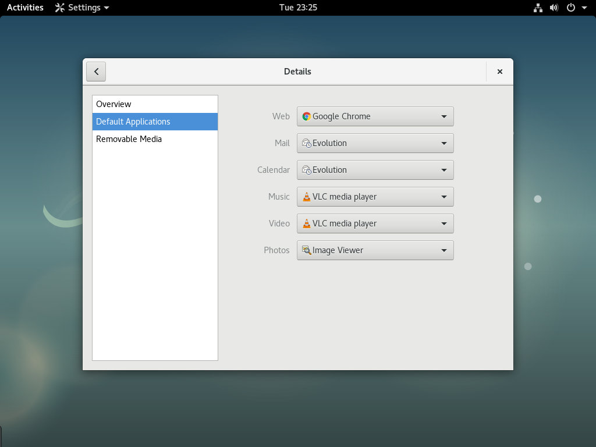

如何在 Debian 9 上安装 VLC Media Player
VLC 是一款免费的开源多媒体播放器。它是跨平台的，可以播放几乎所有的多媒体文件以及 DVD ，音频 CD 和不同的流媒体协议。
本教程介绍如何在 Debian 9 上安装 VLC 媒体播放器。
先决条件
您需要以具有 sudo 访问权限的用户身份登录才能在 Debian 系统上安装软件包。
在 Debian 上安装 VLC Media Player
Debian 9 官方存储库中包含了 VLC 软件包，安装非常简单。
打开终端并键入以下命令以安装 VLC ：
sudo apt update
sudo apt install vlc提示时输入 Y ，安装将开始：
Do you want to continue? [Y/n]安装完成，您可以通过键入 vlc 或单击 VLC Media Player 图标从命令行启动 VLC 播放器。
首次启动 VLC 时，将显示如下窗口，其中包含有关 VLC 隐私和网络访问策略的信息。

将 VLC 设置为默认媒体播放器
要将 VLC 设置为 Debian 9 中的默认媒体播放器，请打开 Gnome 设置，单击“详细信息”按钮，然后转到“默认应用程序”。
在音乐和视频下拉菜单中选择 “VLC 媒体播放器”：

结论
您已经学习了如何在 Debian 9 桌面上安装 VLC 。您现在可以浏览新的媒体播放器并开始观看视频流或收听您喜爱的艺术家。
要查找有关 VLC 的更多信息，请访问 VideoLAN 的文档 页面。